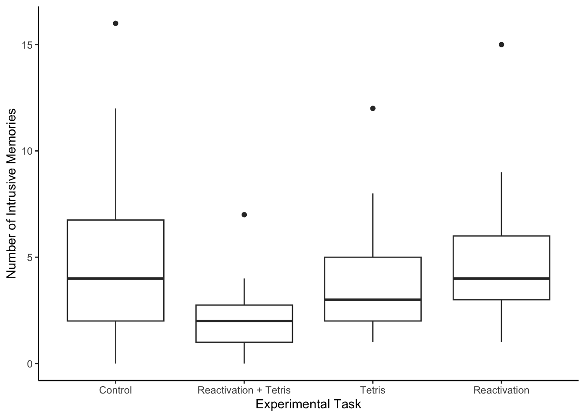
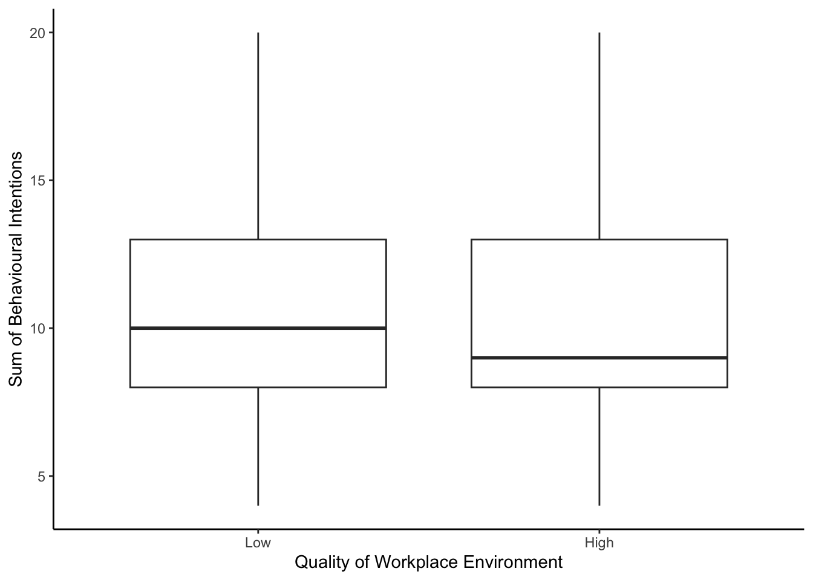
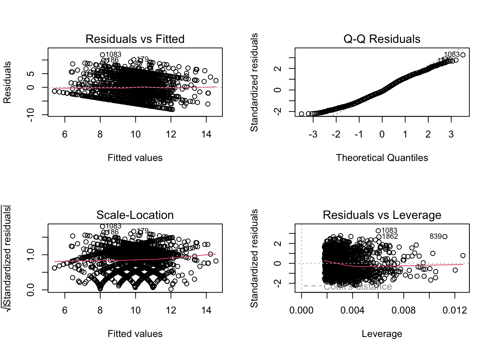
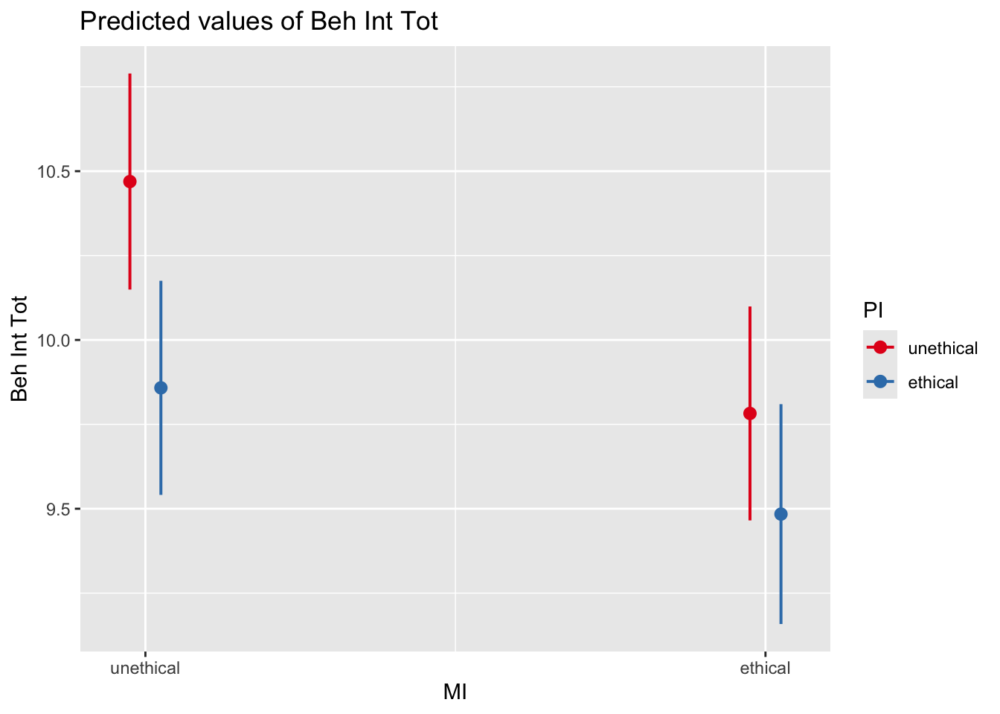
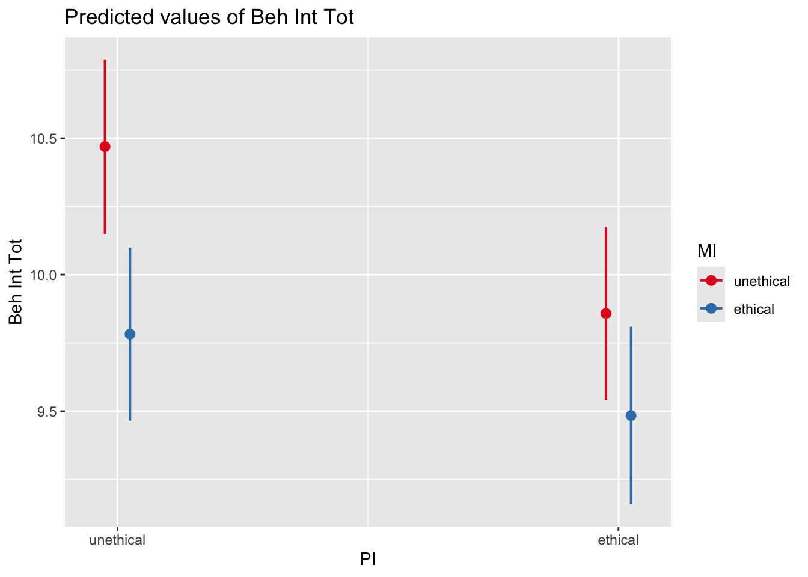
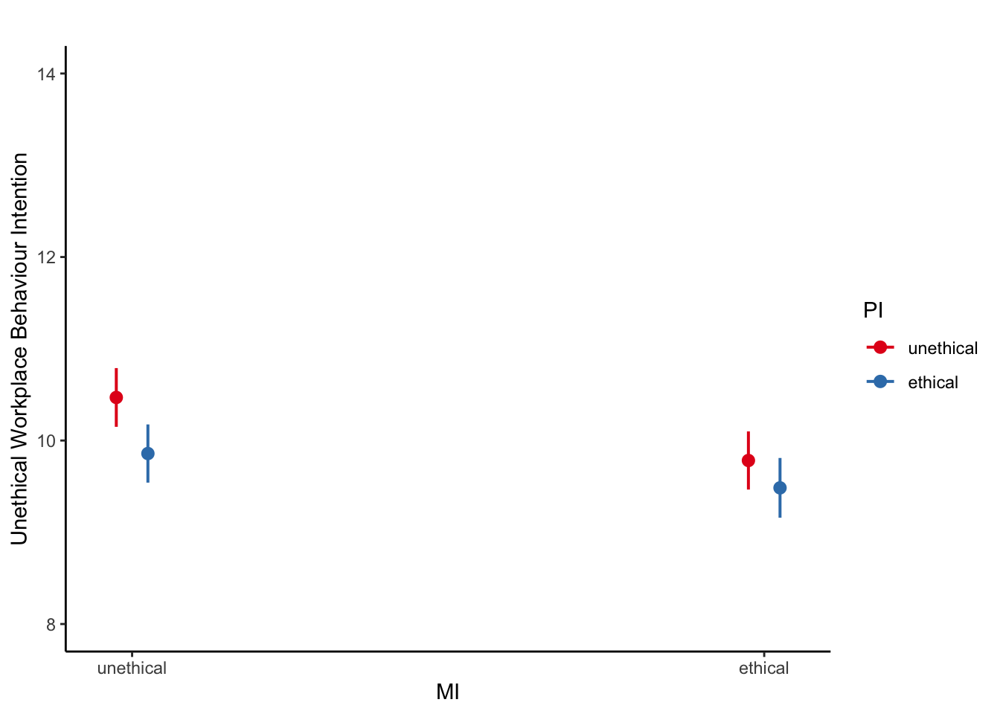
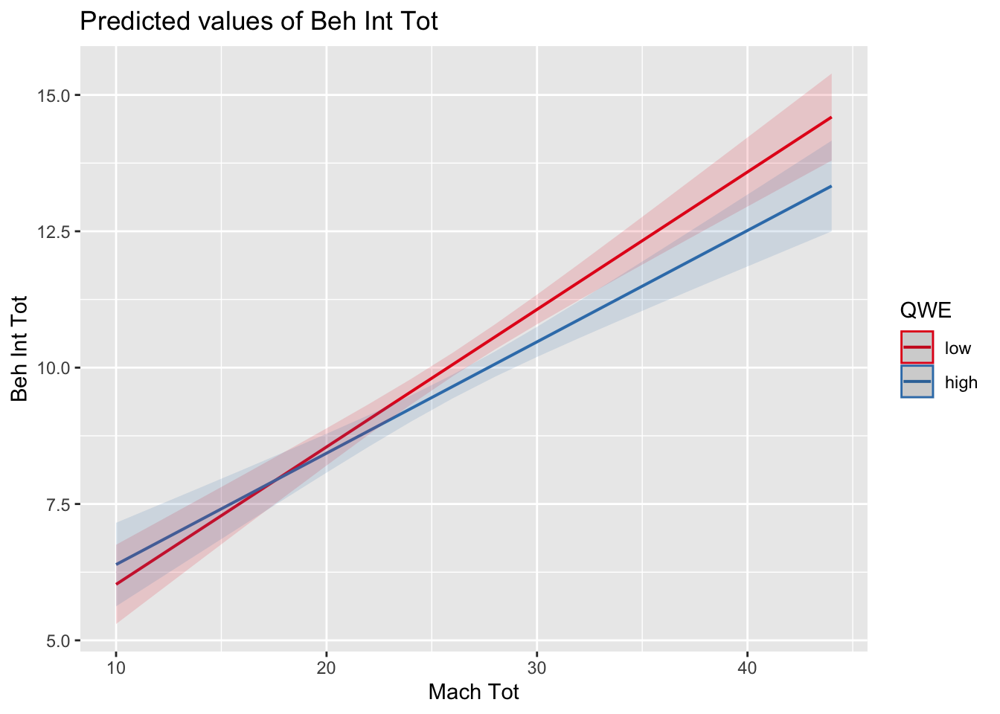
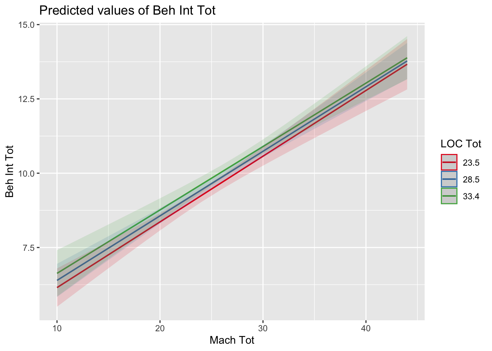

# wrangling and visualisation functions
library(tidyverse)
# Regression interaction plots
library(sjPlot)
# Standardise model coefficients
library(effectsize)
# VIF and other regression functions
library(car)
# Interaction estimates
library(emmeans)
# Checking model assumptions
library(performance)
# Load data for coding schemes
james_data <- read_csv("data/James_2015.csv") %>%
mutate(Condition = as.factor(Condition)) %>%
rename(post_intrusions = Days_One_to_Seven_Number_of_Intrusions)3 Multiple Linear Regression
In this chapter, we build on the Chapter 1 and 2 content where you learnt about the general linear model and applied it to the case of simple linear regression. In this chapter, we will extend that framework for when you want to want to include multiple predictor variables and interactions between predictors. We will cover concepts like standardised and unstandardised predictors, and different coding schemes for predictor variables.
Chapter Intended Learning Outcomes (ILOs)
By the end of this chapter, you will be able to:
Understand different predictor coding schemes.
Understand the difference between unstandardised and standardised beta coefficients.
Understand how to run and interpret a regression for multiple predictors.
Understand how to run and interpret a regression containing interaction terms.
3.1 Chapter preparation
In this chapter, we need a few different datasets, so we will introduce them as we need them.
3.1.1 Organising your files and project for the chapter
Before we can get started, you need to organise your files and project for the chapter, so your working directory is in order.
In your folder for statistics and research design
Stats_Research_Design, create a new folder called03_regression_multiple. Within03_regression_multiple, create two new folders calleddataandfigures.Create an R Project for
03_regression_multipleas an existing directory for your chapter folder. This should now be your working directory.Create a new Quarto document and give it a sensible title describing the chapter, such as
03 Multiple Regression. Save the file in your03_regression_multiplefolder.We are working with a few data sets in this chapter, so please save the following zip file containing all the data files you need: Chapter 03 Data. Right click the link and select “save link as”, or clicking the link will save the file to your Downloads. Extract the files and make sure that you save them as “.csv”. Save or copy the files to your
data/folder within03_regression_multiple.
You are now ready to start working on the chapter!
3.2 Different categorical predictor coding schemes
3.2.1 Introduction to the dataset
To demonstrate different predictor coding schemes, we will use data from James et al. (2015) who wanted to find non-pharmacological interventions for reducing intrusive memories of traumatic events. They compared four conditions:
No-task control: Participants completed a 10-minute filler task.
Reactivation + Tetris: Participants were shown a series of images from a trauma film to reactivate traumatic memories. After a filler task, participants played Tetris for 12 minutes.
Tetris Only: Participants played Tetris for 12 minutes in isolation.
Reactivation Only: Participants completed the reactivation task in isolation.
Their research question was: Would the reactivation and Tetris condition lead to fewer intrusive memories? They predicted the reactivation and Tetris group will have fewer intrusive memories in the week after experimental trauma exposure compared to the other three groups.
This means there is one predictor variable Condition with four levels, one for each experimental condition. We then have one outcome variable post_intrusions for the number of intrusive memories they recorded in the week after the experiment. To support the hypothesis, post_intrusions should decrease in group 2 compared to the three other groups.
We first need to load some packages and the data for the tasks throughout this chapter. If you do not have any of the packages, make sure you install them first.
3.2.2 Exploratory data analysis
When starting any data analysis, it is important to visualise the data for some exploratory data analysis. Using the skills you developed in Data Skills for Reproducible Research, you can explore the data to understand its properties and look for potential patterns. We can create a boxplot to get a brief overview of how the number of intrusive memories changes across the four condition groups.
james_data %>%
ggplot(aes(x = Condition, y = post_intrusions)) +
geom_boxplot() +
scale_y_continuous(name = "Number of Intrusive Memories") +
scale_x_discrete(name = "Experimental Task",
label = c("Control", "Reactivation + Tetris", "Tetris", "Reactivation")) +
theme_classic()
We can see group 2 (reactivation + Tetris) has the lowest score, but we need inferential statistics to test the hypothesis.
3.2.3 No specific coding
For a starting point, we can see what it looks like if you enter post_intrusions as the outcome and Condition as the predictor in simple linear regression with no specific coding scheme.
Call:
lm(formula = post_intrusions ~ Condition, data = james_data)
Residuals:
Min 1Q Median 3Q Max
-5.1111 -1.8889 -0.8333 1.1111 10.8889
Coefficients:
Estimate Std. Error t value Pr(>|t|)
(Intercept) 5.1111 0.7485 6.828 2.89e-09 ***
Condition2 -3.2222 1.0586 -3.044 0.00332 **
Condition3 -1.2222 1.0586 -1.155 0.25231
Condition4 -0.2778 1.0586 -0.262 0.79381
---
Signif. codes: 0 '***' 0.001 '**' 0.01 '*' 0.05 '.' 0.1 ' ' 1
Residual standard error: 3.176 on 68 degrees of freedom
Multiple R-squared: 0.1434, Adjusted R-squared: 0.1056
F-statistic: 3.795 on 3 and 68 DF, p-value: 0.01409Although we use Condition as a single predictor, we actually get three different predictors. In regression, it can only compare two groups at a time, so it will apply dummy coding to your groups. You get k-1 predictors, where there will be one fewer predictors than there are groups.
Using what you learnt in chapters 1 and 2, we can see its a significant model, but the only significant predictor is Condition2. Group 1 is the reference group as the intercept, so Condition2 tells you the mean difference between group 1 and group 2. We compare each group successively to the reference, so Condition3 is the mean difference between group 1 and group 3 etc.
3.2.4 Dummy coding
To demonstrate different coding schemes, we will start with dummy coding. Dummy coding is the default in R and when we entered Condition as a predictor, this is what R does behind the scenes. However, we have no control over the process and the reference group/intercept will be first in numerical or alphabetical order, then each successive k-1 group will be added as separate predictors.
Instead, we can define our own dummy coding to control the reference and target groups. This is particularly useful when you have specific hypotheses like in James et al. (2015), as we are interested in the combined reactivation and Tetris group (group 2). This means we can code for condition 2 as the reference group / intercept, and the other groups are coded as individual predictors.
For dummy coding, you will have k-1 predictors, meaning one fewer predictor than the number of groups. Since we have four groups, we will need to create three predictors. In the code below, our reference group will always be set to 0. Then, for each dummy coded predictor, we will set the target group to 1. Each target group will be 1 for when it is a predictor, but reactivation and Tetris (condition 2) will always be set to 0.
# Dummy code condition 2 as 0 for each comparison, and each successive group as 1
james_data <- james_data %>%
# For each group at a time, code as 1, with the default set to 0 for all other groups
mutate(RT_control = case_when(Condition == 1 ~ 1,
.default = 0),
RT_tetris = case_when(Condition == 3 ~ 1,
.default = 0),
RT_reactivation = case_when(Condition == 4 ~ 1,
.default = 0))We can get an overview of how this looks by checking the distinct values against Condition.
| Condition | RT_control | RT_tetris | RT_reactivation |
|---|---|---|---|
| 1 | 1 | 0 | 0 |
| 2 | 0 | 0 | 0 |
| 3 | 0 | 1 | 0 |
| 4 | 0 | 0 | 1 |
The three predictors show how each comparison is dummy coded. For RT_control, group 1 is coded 1 and all the others are coded 0. For RT_tetris, group 3 is coded 1 and all the others are coded 0 etc. Group 2 is the only one without ever being coded 1.
Note
Remember the interpretation of the intercept is what the outcome value is when the predictors are set to 0. Setting all the predictors to 0 would indicate group 2 in this case, so that represents our reference group. See the predictors as little switches to turn on and off, and when they are all turned off (0), that represents the reference group.
We can now see what this looks like as our regression model containing dummy coded predictors.
james_dummy <- lm(post_intrusions ~ RT_control + RT_tetris + RT_reactivation,
data = james_data)
summary(james_dummy)
Call:
lm(formula = post_intrusions ~ RT_control + RT_tetris + RT_reactivation,
data = james_data)
Residuals:
Min 1Q Median 3Q Max
-5.1111 -1.8889 -0.8333 1.1111 10.8889
Coefficients:
Estimate Std. Error t value Pr(>|t|)
(Intercept) 1.8889 0.7485 2.523 0.01396 *
RT_control 3.2222 1.0586 3.044 0.00332 **
RT_tetris 2.0000 1.0586 1.889 0.06312 .
RT_reactivation 2.9444 1.0586 2.781 0.00700 **
---
Signif. codes: 0 '***' 0.001 '**' 0.01 '*' 0.05 '.' 0.1 ' ' 1
Residual standard error: 3.176 on 68 degrees of freedom
Multiple R-squared: 0.1434, Adjusted R-squared: 0.1056
F-statistic: 3.795 on 3 and 68 DF, p-value: 0.01409This gives us a similar result to before, some of the coefficients are even the same, but we are controlling what the reference group is for the intercept, and what each target comparison is. They are all positive predictors showing the number of intrusive memories is higher in each control group compared to the combined reactivation and Tetris group. However, the difference to Tetris in isolation is not statistically significant.
For these initial steps, it is also a good opportunity to sense check how the comparisons work. The intercept is the mean for our reference group - reactivation plus Tetris. Each coefficient is then the mean difference for each target group against the reference. We can show this is the case by comparing the means.
# Calculate and isolate the mean for group 2 as our reference group
RT_mean <- james_data %>%
# Isolate group 2
filter(Condition == 2) %>%
summarise(mean_intrusions = mean(post_intrusions)) %>%
# Isolate the first value
pluck(1)
# For each other group, calculate the mean difference between the group mean and RT mean
james_data %>%
# Omit group 2
filter(Condition != 2) %>%
# Get mean difference for all other groups
group_by(Condition) %>%
summarise(mean_difference = mean(post_intrusions) - RT_mean)| Condition | mean_difference |
|---|---|
| 1 | 3.222222 |
| 3 | 2.000000 |
| 4 | 2.944444 |
Warning
We can see the mean for group 2 and the mean differences align with exactly what we expect. It is important to work through the process now as the group means align with the model estimates. This will not be the case when we have multiple predictors since the coefficients become partial effects.
3.2.5 Deviation coding
Finally, we have deviation coding. This is more useful once we get to interactions later, but it is easier to see the logic behind what it is doing when we have no other predictors to worry about.
Remember, in dummy coding, the intercept is the reference group mean, and each dummy coded predictor is the mean difference against the reference group.
In deviation coding, the interpretation of the intercept changes to be the grand mean of all observations, i.e., taking the mean of all four groups. The coefficients are then the difference between each comparison group with the grand mean for a main effect. We still need to create a new predictor for k-1 groups, but instead of coding 0 and 1, we use 0.5 and -0.5.
You might see different ways of deviation coding. When you use 0.5/-0.5, you can calculate the effect of the group as 0.5 times the slope, which tells you the difference to the grand mean. For 1/-1. you calculate the effect of the group as 1 times the slope, which tells you the difference to the grand mean. We will typically use 0.5/-0.5 for consistency with other materials, but be aware you might see each approach.
# Create deviation coding for k-1 groups
# In this method, group 2 as our reference will be -0.5 in each comparison.
# Variables not included in the predictor are set to 0
# The target group is set to 0.5 for each predictor
james_data <- james_data %>%
mutate(control_deviation = case_when(Condition == 1 ~ 0.5,
Condition %in% c(3, 4) ~ 0,
Condition == 2 ~ -0.5),
tetris_deviation = case_when(Condition == 3 ~ 0.5,
Condition %in% c(1, 4) ~ 0,
Condition == 2 ~ -0.5),
reactivation_deviation = case_when(Condition == 4 ~ 0.5,
Condition %in% c(1, 3) ~ 0,
Condition == 2 ~ -0.5))As before, we can get an overview of how this looks by checking the distinct values against Condition.
| Condition | control_deviation | tetris_deviation | reactivation_deviation |
|---|---|---|---|
| 1 | 0.5 | 0.0 | 0.0 |
| 2 | -0.5 | -0.5 | -0.5 |
| 3 | 0.0 | 0.5 | 0.0 |
| 4 | 0.0 | 0.0 | 0.5 |
The three predictors show how each comparison is deviation coded. For control_deviation, group 1 is coded 0.5, the predictors to ignore are coded 0, and the target group is coded -0.5. For tetris_deviation, group 3 is coded 0.5 etc. Group 2 is always coded -0.5 in this case.
Note
Remember the interpretation of the intercept is what the outcome value is when the predictors are set to 0. The interpretation shifts here as the intercept represents the grand mean across the group. When the predictors are set to 0, the outcome is in the middle of -0.5 and 0.5, so its the mid point or average. When you do not have interactions, this might not be as useful, but its easier to understand the logic when there are no partial effects.
We can now see what this looks like for our regression model containing deviation coded predictors.
james_deviation <- lm(post_intrusions ~ control_deviation + tetris_deviation + reactivation_deviation,
data = james_data)
summary(james_deviation)
Call:
lm(formula = post_intrusions ~ control_deviation + tetris_deviation +
reactivation_deviation, data = james_data)
Residuals:
Min 1Q Median 3Q Max
-5.1111 -1.8889 -0.8333 1.1111 10.8889
Coefficients:
Estimate Std. Error t value Pr(>|t|)
(Intercept) 3.93056 0.37427 10.502 7.11e-16 ***
control_deviation 2.36111 1.29652 1.821 0.073 .
tetris_deviation -0.08333 1.29652 -0.064 0.949
reactivation_deviation 1.80556 1.29652 1.393 0.168
---
Signif. codes: 0 '***' 0.001 '**' 0.01 '*' 0.05 '.' 0.1 ' ' 1
Residual standard error: 3.176 on 68 degrees of freedom
Multiple R-squared: 0.1434, Adjusted R-squared: 0.1056
F-statistic: 3.795 on 3 and 68 DF, p-value: 0.01409This time, the results look a little different. None of the coefficients are significant, but importantly, the model is exactly the same. We are still explaining the same amount of variance in the outcome, but the way we are expressing it is different.
Deviation coding is tricky at first to appreciate what its doing, so working through the logic is even more important than for dummy coding. This time, we need to calculate the grand mean of all observations, then compare the coefficients against the grand mean.
# Calculate and isolate the grand mean of all groups
grand_mean <- james_data %>%
summarise(mean_intrusions = mean(post_intrusions)) %>%
pluck(1)
# Calculate the mean number of intrusions for each group
# Then calculate the deviations as 2 times the mean difference
james_data %>%
group_by(Condition) %>%
summarise(mean_intrusions = mean(post_intrusions),
deviations = (grand_mean - mean(post_intrusions)) * 2)| Condition | mean_intrusions | deviations |
|---|---|---|
| 1 | 5.111111 | -2.3611111 |
| 2 | 1.888889 | 4.0833333 |
| 3 | 3.888889 | 0.0833333 |
| 4 | 4.833333 | -1.8055556 |
Warning
We can see the grand mean and deviations align with exactly what we expect. It is trickier than dummy coding, but this is what deviation coding does. Note in the model you do not get the group 2 contrast as that’s always the reference group and we are ignoring the sign of the deviation to check its consistency. Also pay attention to calculating 2 times the difference, since we used 0.5/-0.5 as the coding scheme.
It is important to work through the process now as the deviations align with the model estimates. This will not be the case when we have multiple predictors since the coefficients become partial predictors.
3.3 Multiple linear regression with individual predictors
3.3.1 Introduction to the dataset
To demonstrate multiple linear regression models, we will use data from Evans (2024) (the stage two manuscript is currently under review) who performed a multi-site registered replication report containing 2218 participants. They wanted to replicate Jones & Kavanagh (1996) - an influential study in organisational psychology on unethical workplace behaviour. The variables can be split into two types. The first are situational factors and relate to experimental manipulations on a vignette that participants read:
Workplace environment (
QWE): Your workplace environment is described as high or low quality.Manager influence (
MI): Your manager is described as behaving ethically or unethically.Peer influence (
PI): Your peers are described as behaving ethically or unethically.
The second group of variables are individual and relate to the participant rather than being experimentally manipulated:
Locus of control (
LOCTot): A measure of whether someone attributes events internally or externally.Social desirability (
SocDesTot): A measure of whether someone would respond in a way that would make them look better than they would typically act.Machiavellianism (
MachTot): A personality trait that is part of the dark-triad, showing a lack of empathy and willingness to manipulate others.
The outcome in the study was then the participant’s unethical workplace behaviour intention (BehIntTot). The vignette described a situation in a company and the unethical behaviour was whether you would manipulate expense requests to claim more money than you really should. There were four questions which were added up to range from 4 to 20, with higher values meaning greater intention to behave unethically.
Our research question for this study is: What is the effect of individual and situational factors on unethical workplace behaviour intentions? We will not pose specific hypotheses, but we essentially predict that these six factors will affect someone’s unethical workplace behaviour intention.
To start with, we will load the data and set the factor levels for independent variables.
3.3.2 Visualise the relationship
When starting any data analysis, it is important to visualise the data for some exploratory data analysis. Using the skills you developed in Data Skills for Reproducible Research, explore the data understand its properties and look for potential patterns.
Please try this yourself and explore different variables and their relationship to unethical workplace behaviour. For example, we can look at the effect of quality of workplace environment:
evans_data %>%
ggplot(aes(x = QWE, y = BehIntTot)) +
geom_boxplot() +
scale_y_continuous(name = "Sum of Behavioural Intentions") +
scale_x_discrete(name = "Quality of Workplace Environment", label = c("Low", "High")) +
theme_classic()
Alternatively, we might look at the relationship between unethical behaviour intention and Machiavellianism:
3.3.3 Model 1: Situational factors
Now you understand the data a little better, it is time to apply our modelling techniques to address our research question. We will go with the hierarchical approach to entering predictors to enter them in two steps. First, situational factors, then the individual factors on top of them.
Call:
lm(formula = BehIntTot ~ QWE + MI + PI, data = evans_data)
Residuals:
Min 1Q Median 3Q Max
-6.5855 -2.5855 -0.5956 2.9452 10.3357
Coefficients:
Estimate Std. Error t value Pr(>|t|)
(Intercept) 10.5855 0.1628 65.018 < 2e-16 ***
QWEhigh -0.3905 0.1629 -2.397 0.01663 *
MIethical -0.5307 0.1630 -3.256 0.00115 **
PIethical -0.4592 0.1630 -2.817 0.00488 **
---
Signif. codes: 0 '***' 0.001 '**' 0.01 '*' 0.05 '.' 0.1 ' ' 1
Residual standard error: 3.837 on 2214 degrees of freedom
Multiple R-squared: 0.01068, Adjusted R-squared: 0.009341
F-statistic: 7.968 on 3 and 2214 DF, p-value: 2.774e-05All three predictors are statistically significant and are all negative. Since we coded the positive manipulations as the target groups, this shows people reported lower unethical workplace behaviour intentions in the high/ethical groups.
We explain a significant amount of variance in unethical behaviour intentions, but note the \(R^2\) and adjusted \(R^2\) values. They are approximately .01 or 1%, showing with 2000 plus participants, we can reject the null, but we explain only a modest proportion of variance.
At this point, it is an important lesson to see how the presence of other predictors affects the estimates of another predictor. For a demonstration, we will create another regression model, but only including one situational variable at a time. Feel free to create the other two yourself and compare.
Call:
lm(formula = BehIntTot ~ QWE, data = evans_data)
Residuals:
Min 1Q Median 3Q Max
-6.0938 -2.0938 -0.7052 2.9062 10.2948
Coefficients:
Estimate Std. Error t value Pr(>|t|)
(Intercept) 10.0938 0.1151 87.685 <2e-16 ***
QWEhigh -0.3886 0.1635 -2.377 0.0176 *
---
Signif. codes: 0 '***' 0.001 '**' 0.01 '*' 0.05 '.' 0.1 ' ' 1
Residual standard error: 3.851 on 2216 degrees of freedom
Multiple R-squared: 0.002542, Adjusted R-squared: 0.002092
F-statistic: 5.648 on 1 and 2216 DF, p-value: 0.01756
Important
If you compare the coefficient for QWE in model 1 to this new isolated model, we get slightly different estimates. Its close, but not exactly the same. That is because in a multiple linear regression model, the predictors become partial effects. We are trying to model different sources of variance, so what might be explained by a predictor in one model, might change in a model with additional predictors. So, you might find predictors that are statistically significant in one model are no longer significant in another model.
3.3.4 Model 2: Situational and individual factors
Now we have explored the effect of situational factors on unethical behaviour intentions, we can add the individual factors to see how well they contribute to the model.
individual_model2 <- lm(BehIntTot ~ QWE + MI + PI + LOCTot + SocDesTot + MachTot,
data = evans_data)
summary(individual_model2)
Call:
lm(formula = BehIntTot ~ QWE + MI + PI + LOCTot + SocDesTot +
MachTot, data = evans_data)
Residuals:
Min 1Q Median 3Q Max
-8.0856 -2.7105 -0.4456 2.8414 11.8721
Coefficients:
Estimate Std. Error t value Pr(>|t|)
(Intercept) 7.61519 1.00062 7.610 4.02e-14 ***
QWEhigh -0.41735 0.15513 -2.690 0.00719 **
MIethical -0.47421 0.15532 -3.053 0.00229 **
PIethical -0.39941 0.15526 -2.572 0.01016 *
LOCTot 0.02330 0.01687 1.381 0.16744
SocDesTot -0.08860 0.01984 -4.467 8.35e-06 ***
MachTot 0.18967 0.01773 10.697 < 2e-16 ***
---
Signif. codes: 0 '***' 0.001 '**' 0.01 '*' 0.05 '.' 0.1 ' ' 1
Residual standard error: 3.652 on 2211 degrees of freedom
Multiple R-squared: 0.1049, Adjusted R-squared: 0.1025
F-statistic: 43.19 on 6 and 2211 DF, p-value: < 2.2e-16With three more variables, we explain a larger proportion of variance. Before, adjusted \(R^2\) was around 1%, now it is .10 or 10%. So adding these situational variables seem to explain a larger chunk of variance. All the predictors apart from locus of control are statistically significant. Almost all the significant predictors are negative, suggesting lower unethical behaviour intention, apart from Machiavellianism. This makes sense as it means higher in a personality trait for unempathic behaviour is associated with higher intention for unethical behaviour.
3.3.4.1 Standardised coefficients
At this point with a mix of predictors, we can also check the standardised coefficients to see which predictors appear to be the strongest on a standard deviation scale.
| Parameter | Std_Coefficient | CI | CI_low | CI_high |
|---|---|---|---|---|
| (Intercept) | 0.1659965 | 0.95 | 0.0871282 | 0.2448649 |
| QWEhigh | -0.1082689 | 0.95 | -0.1871863 | -0.0293515 |
| MIethical | -0.1230192 | 0.95 | -0.2020337 | -0.0440047 |
| PIethical | -0.1036139 | 0.95 | -0.1826004 | -0.0246273 |
| LOCTot | 0.0296680 | 0.95 | -0.0124626 | 0.0717985 |
| SocDesTot | -0.0989384 | 0.95 | -0.1423766 | -0.0555001 |
| MachTot | 0.2421870 | 0.95 | 0.1977892 | 0.2865848 |
Machiavellianism seems to be the strongest predictor here, showing for every 1 standard deviation increase in Machiavellianism, we expect unethical behaviour intentions to increase by 0.24 standard deviations.
3.3.4.2 Checking assumptions
At this point, we can check whether there are any red flags by checking the assumption plots. Remember, in multiple linear regression, we want:
The outcome is interval/ratio level data.
The predictor variables are interval/ratio or categorical (with two levels at a time).
All values of the outcome variable are independent (i.e., each score should come from a different participant/observation).
The predictors have non-zero variance.
The relationship between the outcome and predictors is linear.
The residuals should be normally distributed.
There should be homoscedasticity.
# Change the panel layout to 2 x 2
par(mfrow=c(2,2))
# plot the diagnostic plots
plot(individual_model2)
There do not appear to be any major red flags (apart from the outcome looks discrete which we will get onto). Plot 1 shows homoscedasticity as the residuals are roughly consistent across the x-axis. The qq plot in plot 2 is fine, just with values at the lower and upper scale moving away from the line. Combined with plots 1 and 3, there are characteristic signs that the outcome may not be truly interval. The residuals are organised into lines as remember our outcome is the sum of a Likert question, so there are only so many possible values. We will come back to this idea in chapter 5. Finally, plot 4 is not flagging any observations as high in leverage for potential outliers.
So far, this is the same as chapters 1 and 2. We have a new assumption to check when we have multiple predictors though. We do not want predictors to be too heavily correlated with each other, known as multicollinearity. We can check this using a function from vif().
QWE MI PI LOCTot SocDesTot MachTot
1.000447 1.002926 1.002201 1.140099 1.211972 1.266108 VIF stands for variance inflation factor and a conservative estimate is values that are less than 2.5 are fine. Values above 2.5 suggest your predictors are too heavily correlated. Some people suggest less than 10 is OK, but siding with caution is normally a good approach. Here, the highest value is 1.27, so it does not look like there is anything to worry about.
Like Chapters 1 and 2, we can also use the check_model() function from
The posterior predictive check reinforces our suspicions about the discrete looking data as the model happily predicts normal looking estimates, but the observed data have notable peaks where certain values are more common. We also get a plot for collinearity which does not suggest we have anything to worry about.
3.3.5 Model comparison
Now we have two competing models, we can see whether model 2 is the better fitting model and is worth adding three additional predictors in. We are trying to avoid overfitting as \(R^2\) will almost always increase with more variables, but it might not be actually doing anything worthwhile.
3.3.5.1 Comparing models using anova()
First, we can compare the two models using analysis of variance (ANOVA) to see whether model 2 explains significantly more variance than model 1.
| Res.Df | RSS | Df | Sum of Sq | F | Pr(>F) |
|---|---|---|---|---|---|
| 2214 | 32591.48 | NA | NA | NA | NA |
| 2211 | 29487.44 | 3 | 3104.04 | 77.5814 | 0 |
It does seem to be the case here. Careful of the rounding as the p-value is tiny and its rounded to 0 in the rendering of the book. The difference between the models is statistically significant, suggesting model 2 explains more variance than model 1.
3.3.5.2 Comparing R2 for each model
Second, we can compare \(R^2\) for each model to see if model 2 explains more variance in our outcome than model 1. This is more of a prompt to look at your two model objects and compare the values.
Remember, adjusted \(R^2\) is particularly useful here as it corrects for model complexity. It penalises for the number of predictors in your model, so there will be a bigger difference in \(R^2\) and adjusted \(R^2\) when the model is unnecessarily complex. This also supports our case as adjusted \(R^2\) increases from approximately .01 to .10.
3.3.5.3 Checking model fit using AIC
Finally, we can check the Akaike Information Criterion (AIC) as a measure of model fit. It calculates prediction error in the model and it can only be interpreted as a relative value. There is not an inherent good or bad threshold, its relative to the data and models you are working with.
As it represents prediction error, lower AIC values mean better model fit relative to another model. If a more complicated model has a higher AIC than a less complicated model, there is potential overfitting when you have redundant predictors, so its better to retain the less complex model.
The AIC value decreases in model 2, suggesting that although we have a more complex model, the additional predictors are not redundant, there is less prediction error and we are learning something useful by including these extra predictors.
3.4 Multiple linear regression with interactions
Finally, we will explore how you can express different types of interactions in multiple linear regression models.
3.4.1 Coding schemes for interactions
At the start of this chapter and previously in Chapter 1, we explored different coding schemes for predictors. For continuous predictors, we can enter variables as raw or centered values. For categorical predictors, we can enter variables as dummy or deviation coded values.
When you have multiple linear regression models, changing the coding scheme does little else but helps you interpret the intercept. However, once you start adding interaction terms, it is super important to know the difference between what the coefficients mean when you center the predictors or not.
In preparation for later, lets deviation code the categorical variables and center the continuous variables.
evans_data <- evans_data %>%
# Start by deviation coding the categorical variables as 0.5 and -0.5
mutate(QWE_deviation = case_when(QWE == "high" ~ 0.5,
.default = -0.5),
MI_deviation = case_when(MI == "ethical" ~ 0.5,
.default = -0.5),
PI_deviation = case_when(PI == "ethical" ~ 0.5,
.default = -0.5),
# Then center the continuous predictors by subtracting the mean
LOCTot_center = LOCTot - mean(LOCTot),
SocDesTot_center = SocDesTot - mean(SocDesTot),
MachTot_center = MachTot - mean(MachTot))3.4.2 Categorical by categorical interactions
We will demonstrate these principles by focusing on two predictors at a time, but note these concepts just extend everything you learnt so far. You could have just two interacting predictors, or you could have a mix of individual and interacting predictors.
First, we will explore categorical by categorical interactions. This looks at the moderating effect of one predictor on the difference in the outcome between levels of another predictor.
3.4.2.1 Dummy coded predictors
For a starting point, let’s look at what the model looks like for our original dummy coded predictors. Previously, we separated predictors with +, but to get the interaction between predictors, we use * instead.
interaction_model1_dummy <- lm(BehIntTot ~ MI * PI,
data = evans_data)
summary(interaction_model1_dummy)
Call:
lm(formula = BehIntTot ~ MI * PI, data = evans_data)
Residuals:
Min 1Q Median 3Q Max
-6.4693 -2.4693 -0.4841 3.1418 10.2177
Coefficients:
Estimate Std. Error t value Pr(>|t|)
(Intercept) 10.4693 0.1632 64.156 < 2e-16 ***
MIethical -0.6870 0.2297 -2.992 0.00281 **
PIethical -0.6112 0.2298 -2.660 0.00787 **
MIethical:PIethical 0.3130 0.3263 0.959 0.33759
---
Signif. codes: 0 '***' 0.001 '**' 0.01 '*' 0.05 '.' 0.1 ' ' 1
Residual standard error: 3.841 on 2214 degrees of freedom
Multiple R-squared: 0.008527, Adjusted R-squared: 0.007184
F-statistic: 6.347 on 3 and 2214 DF, p-value: 0.0002781
Note
There are different symbols you can use for model formulas. Using * is shorthand for “give me the individual and interaction effects of these variables”. You could also specify it fully by using predictor1 + predictor 2 + predictor1:predictor2. You can find a full list of formula syntax in places like this Econometrics blog {target=“_blank”}.
Manager influence and peer influence are both significant, but the interaction between them is not statistically significant.
3.4.2.2 Deviation coded predictors
Compare that to the same model, but using the deviation coded predictors instead. Look at the coefficients for the individual predictors and the interaction. Which are different and which are the same between the models?
interaction_model1_deviation <- lm(BehIntTot ~ MI_deviation * PI_deviation,
data = evans_data)
summary(interaction_model1_deviation)
Call:
lm(formula = BehIntTot ~ MI_deviation * PI_deviation, data = evans_data)
Residuals:
Min 1Q Median 3Q Max
-6.4693 -2.4693 -0.4841 3.1418 10.2177
Coefficients:
Estimate Std. Error t value Pr(>|t|)
(Intercept) 9.89847 0.08158 121.341 < 2e-16 ***
MI_deviation -0.53053 0.16315 -3.252 0.00116 **
PI_deviation -0.45467 0.16315 -2.787 0.00537 **
MI_deviation:PI_deviation 0.31297 0.32630 0.959 0.33759
---
Signif. codes: 0 '***' 0.001 '**' 0.01 '*' 0.05 '.' 0.1 ' ' 1
Residual standard error: 3.841 on 2214 degrees of freedom
Multiple R-squared: 0.008527, Adjusted R-squared: 0.007184
F-statistic: 6.347 on 3 and 2214 DF, p-value: 0.0002781You will see that the model fit and coefficient for the interaction is identical, but the individual predictor coefficients changed. This happens because of the interpretation of the intercept and coefficient in dummy coding. When you dummy code these variables, the intercept is the value for the outcome when both manager influence is unethical and peer influence is unethical. The coefficient for manager influence is then how we expect the outcome to change for ethical managers, when there is an unethical peer influence. These are simple effects, which can be useful information, but it might not be what you are expecting.
In the deviation model, this turns into something more familiar to those working with ANOVA to compare categorical variables. The intercept is the grand mean now, so the individual predictors become main effects, or the effect of one predictor, when the second predictor is held constant at 0. For instance, an ethical manager decreases the unethical behaviour intention by 1.06 (2 * -0.53 because of the -0.5/0.5 deviation coding scheme) compared to the grand mean.
Both approaches provide useful information, but think about what information you are looking for. Typically, main effects are more useful when you want to know the individual effect of predictors on the outcome. Simple effects are then normally more useful when you are trying to break down each element of an interaction and you want the conditional effect of one predictor on another.
Its always about your research question and what information you want to know.
3.4.2.3 Plotting interactions
In these examples, the data set is great for a large sample of different variables, but there are not really any meaningful interactions to explore. But, we can still demonstrate what you would do if there was an interaction to explore.
First, plotting is your friend. Sometimes you can plot your design fine using
# sjPlot makes it easy to plot estimates from the model
plot_model(interaction_model1_dummy, # You enter the model object
type = "pred", # The type of plot you want to create
terms = c("MI", "PI")) # The predictors you want to plot 
It is up to you and your research question which way you plot the interaction. You can explore the moderating effect of predictor 1 on predictor 2, or the moderating effect of predictor 2 on predictor 1. You will need to consider which addresses your research question. For example, we can flip it around:
# sjPlot makes it easy to plot estimates from the model
plot_model(interaction_model1_dummy, # You enter the model object
type = "pred", # The type of plot you want to create
terms = c("PI", "MI")) # The predictors you want to plot 
plot_model(interaction_model1_dummy,
type = "pred",
terms = c("MI", "PI")) +
scale_y_continuous(breaks = seq(8, 14, 2),
limits = c(8, 14),
name = "Unethical Workplace Behaviour Intention") +
theme_classic() +
labs(title = "")Scale for y is already present.
Adding another scale for y, which will replace the existing scale.
3.4.2.4 Breaking down model estimates
Another way of breaking down interactions is by reporting the estimated marginal means. When there is an interaction, you often want to known whether the mean difference in predictor 1 is different across the levels of predictor 2. Plotting shows you this visually, but you might want to report effect sizes in your write-up.
The
For example, we can report the estimated marginal means and their confidence intervals of all four groups.
PI = unethical:
MI emmean SE df lower.CL upper.CL
unethical 10.47 0.163 2214 10.15 10.79
ethical 9.78 0.162 2214 9.47 10.10
PI = ethical:
MI emmean SE df lower.CL upper.CL
unethical 9.86 0.162 2214 9.54 10.18
ethical 9.48 0.166 2214 9.16 9.81
Confidence level used: 0.95 We can also report the mean difference moderated by the second predictor by wrapping it in the contrast() function.
PI = unethical:
contrast estimate SE df t.ratio p.value
unethical effect 0.344 0.115 2214 2.992 0.0028
ethical effect -0.344 0.115 2214 -2.992 0.0028
PI = ethical:
contrast estimate SE df t.ratio p.value
unethical effect 0.187 0.116 2214 1.614 0.1067
ethical effect -0.187 0.116 2214 -1.614 0.1067
P value adjustment: fdr method for 2 tests Note you get all combinations of these comparisons, so when you have two levels in a predictor, you get the same contrast but flipped around for each level of the moderator.
Important
One final warning, you can look at these variables in many ways, but think about your plan and what will address your research question and hypothesis.
3.4.3 Continuous by categorical interactions
Second, we have categorical by continuous interactions. This is where you have one categorical predictor and one continuous predictor. It tells you whether the relationship between your continuous predictor and your outcome is moderated by your categorical predictor.
For this model, we will focus on whether workplace quality (QWE_deviation) moderates the relationship between Machiavellianism (MachTot_center) and unethical behaviour intentions (BehIntTot). Now you know the difference between raw and centered predictors, make sure you use the centered variables to interpret the individual predictors as main effects.
interaction_model2_deviation <- lm(BehIntTot ~ QWE_deviation * MachTot_center,
data = evans_data)
summary(interaction_model2_deviation)
Call:
lm(formula = BehIntTot ~ QWE_deviation * MachTot_center, data = evans_data)
Residuals:
Min 1Q Median 3Q Max
-8.0748 -2.7977 -0.5381 2.9165 11.5690
Coefficients:
Estimate Std. Error t value Pr(>|t|)
(Intercept) 9.90061 0.07817 126.647 < 2e-16 ***
QWE_deviation -0.41162 0.15635 -2.633 0.00853 **
MachTot_center 0.22810 0.01591 14.341 < 2e-16 ***
QWE_deviation:MachTot_center -0.04788 0.03181 -1.505 0.13246
---
Signif. codes: 0 '***' 0.001 '**' 0.01 '*' 0.05 '.' 0.1 ' ' 1
Residual standard error: 3.681 on 2214 degrees of freedom
Multiple R-squared: 0.0892, Adjusted R-squared: 0.08796
F-statistic: 72.28 on 3 and 2214 DF, p-value: < 2.2e-16There is no interaction again, but if we did want to explore it, we can plot the simple effects by creating a dummy-coded model.
interaction_model2_dummy <- lm(BehIntTot ~ QWE * MachTot,
data = evans_data)
plot_model(interaction_model2_dummy,
type = "pred",
terms = c("MachTot", "QWE"))
In a continuous by categorical interaction, it will tell you whether the slope between your outcome and continuous predictor is different/moderated by the levels of your categorical predictor. For example, whether the relationship flips from positive to negative, one is very weak, or the gradient of the slopes are just different. Here, we can see the relationship is slightly weaker in high quality workplaces compared to low quality, but ultimately that difference is not statistically significant as shown by the interaction term in the model.
3.4.4 Continuous by continuous interactions
Finally, we have continuous by continuous interactions. This is where you have two continuous predictors. It tells you whether the relationship between your first continuous predictor and your outcome is moderated by your second continuous predictor.
For this model, we will focus on whether locus of control (LOCTot_center) moderates the relationship between Machiavellianism (MachTot_center) and unethical behaviour intentions (BehIntTot). Make sure you use the centered variables to interpret the individual predictors as main effects.
interaction_model3_deviation <- lm(BehIntTot ~ LOCTot_center * MachTot_center,
data = evans_data)
summary(interaction_model3_deviation)
Call:
lm(formula = BehIntTot ~ LOCTot_center * MachTot_center, data = evans_data)
Residuals:
Min 1Q Median 3Q Max
-8.0970 -2.7347 -0.5072 2.8787 12.0243
Coefficients:
Estimate Std. Error t value Pr(>|t|)
(Intercept) 9.9073451 0.0810659 122.213 <2e-16 ***
LOCTot_center 0.0357878 0.0168673 2.122 0.034 *
MachTot_center 0.2172115 0.0168029 12.927 <2e-16 ***
LOCTot_center:MachTot_center -0.0007797 0.0027161 -0.287 0.774
---
Signif. codes: 0 '***' 0.001 '**' 0.01 '*' 0.05 '.' 0.1 ' ' 1
Residual standard error: 3.685 on 2214 degrees of freedom
Multiple R-squared: 0.08733, Adjusted R-squared: 0.0861
F-statistic: 70.62 on 3 and 2214 DF, p-value: < 2.2e-16Plotting is always helpful for interpreting interactions, but it is crucial for continuous by continuous interactions.
The interpretation relies on simple slopes analysis. As there are not discrete values of your moderator, simple slopes works by creating discrete values from your continuous predictor. Typically, this is 1 standard deviation below the mean, the mean, and 1 standard deviation above the mean. This tells you as you increase levels of your moderator, how does it affect the relationship between your first predictor and the outcome?
interaction_model3_dummy <- lm(BehIntTot ~ LOCTot * MachTot,
data = evans_data)
plot_model(interaction_model3_dummy,
type = "pred",
terms = c("MachTot", "LOCTot"))
In a simple slopes analysis, it will tell you whether the slope between your outcome and continuous predictor is different/moderated by the fixed points of your second predictor. For example, whether the relationship flips from positive to negative, one is very weak, or the gradient of the slopes are just different. Here, the interaction was non-significant, and there is very little difference between the three lines, they are almost exactly parallel to each other.
3.5 Test Yourself
Now you have followed along to a guided example, it is important you can transfer your knowledge to a new scenario. So, we have a new data set for you to try out your understanding of these techniques on. Follow the instructions below and answer the questions. The solution is there to check your answers against, but make sure you try the activities independently first.
3.5.1 Introduction to the dataset
We will use data from Tulloch et al. who performed an unpublished replication of Troy et al. (2017). Troy et al. conducted three studies exploring the effect of emotion regulation and socioeconomic status on depressive symptoms. The data you will use comes from a dissertation project where the team replicated study one to investigate if socioeconomic status moderates the link between cognitive reappraisal ability and depressive symptoms. For the purposes of this task, the key variables from the study included:
Socioeconomic Status (SES;
SES) - Current annual family income was rated on a 1 to 12 scale aligning with income bands. The bands were converted from the original study’s values in US dollars, to the replication study’s target population of UK (in British Pounds) and Malaysia (in Malaysian Ringgit). Its an odd way of recording this data, but go with it…Country (
Country) - Categorical variable showing whether the participant completed the study in Malaysia or the UK.Cognitive Reappraisal Ability (CRA;
CRA_mean) - A scale measuring cognitive reappraisal ability. The variable was calculated from the mean of eight items measured on a 1 (strongly disagree) - 7 (strongly agree) scale, with higher values meaning higher cognitive reappraisal ability.Depressive Symptoms (
DS_sum) - This was measured as current non-clinical symptoms of depression from the Center for Epidemiological Studies Depression Scale. Participants reported the presence of depression symptoms in the past week across five items on a 0 (none of the time) to 3 (all of the time) scale. The variable was calculated from the sum of the five items, meaning the scale could range from 0 to 15, with higher values meaning greater depression symptoms in the past week.Life Stress (
LS_mean) - This was measured as perceptions of life stress in the past two years. Participants completed four questions on a 1 (never) to 5 (very often) scale. The variable was calculated from the mean of four questions, with higher values meaning greater life stress in the past two years.
In the original Troy et al. study, they investigated if socioeconomic status moderates the link between cognitive reappraisal ability and depressive symptoms. In study one, they applied a multiple regression model with depressive symptoms as the outcome, life stress as an individual predictor, and an interaction between cognitive reappraisal ability and socioeconomic status. They found that:
Life stress was a significant positive predictor of depressive symptoms.
Cognitive reappraisal was a significant negative predictor of depressive symptoms.
There was a significant interaction between cognitive reappraisal and socioeconomic status. They found that there was a stronger negative relationship between cognitive reappraisal and depressive symptoms for lower values of socioeconomic status compared to higher values (i.e., simple slopes analysis).
In the replication study, the team wanted to replicate the study to see if they would observe similar findings by including two different countries of origin (Malaysia and UK) compared to the original sample from the United States. The research questions were:
Does country of origin, life stress, cognitive reappraisal ability, and socioeconomic status predict depressive symptoms?
Does socioeconomic status moderate the relationship between cognitive reappraisal ability and depressive symptoms?
# Load data for coding schemes
# We are applying the coding scheme, just so its crystal clear whether your answers align
tulloch_data <- read_csv("data/Tulloch_2022.csv") %>%
mutate(Country = factor(Country,
levels = c("Malaysia", "UK")),
Country_deviation = case_when(Country == "UK" ~ 0.5,
.default = -0.5),
SES_center = SES - mean(SES),
CRA_center = CRA_mean - mean(CRA_mean),
LS_center = LS_mean - mean(LS_mean))
Try this
Fit two models:
Predict depressive symptoms (
DS_sum) from country of origin (Country_deviation), life stress (LS_center), cognitive reappraisal (CRA_center), and socioeconomic status (SES_center) as individual predictors.Predict depressive symptoms (
DS_sum) from country of origin (Country_deviation), life stress (LS_center), and the interaction between cognitive reappraisal (CRA_center) and socioeconomic status (SES_center).
From here, apply what you learnt in the guided examples above to this new independent task and complete the questions below to check your understanding.
3.5.2 Model 1: Individual predictors
Rounding to three decimals, adjusted \(R^2\) for the model is , meaning the predictors explain % of the variance in our outcome of depressive symptoms.
Rounding to two decimals, the slope for
Country_deviationis , suggesting depressive symptoms were higher in .Rounding to two decimals, the slope for
LS_centeris , suggesting life stress is a predictor.Rounding to two decimals, the slope for
CRA_centeris , suggesting cognitive reappraisal is a predictor.Rounding to two decimals, the slope for
SES_centeris , suggesting socioeconomic status is a predictor.Converting the model to standardised predictors, has the largest effect on depressive symptoms.
Show me the solution
tulloch_model1 <- lm(DS_sum ~ Country_deviation + LS_center + CRA_center + SES_center,
data = tulloch_data)
summary(tulloch_model1)
Call:
lm(formula = DS_sum ~ Country_deviation + LS_center + CRA_center +
SES_center, data = tulloch_data)
Residuals:
Min 1Q Median 3Q Max
-7.301 -2.069 -0.484 2.064 8.623
Coefficients:
Estimate Std. Error t value Pr(>|t|)
(Intercept) 4.57426 0.22915 19.962 < 2e-16 ***
Country_deviation 1.32867 0.56926 2.334 0.02070 *
LS_center 1.69695 0.31853 5.327 2.95e-07 ***
CRA_center -0.48039 0.18290 -2.626 0.00937 **
SES_center -0.21012 0.09833 -2.137 0.03396 *
---
Signif. codes: 0 '***' 0.001 '**' 0.01 '*' 0.05 '.' 0.1 ' ' 1
Residual standard error: 2.996 on 180 degrees of freedom
Multiple R-squared: 0.2557, Adjusted R-squared: 0.2391
F-statistic: 15.46 on 4 and 180 DF, p-value: 6.901e-11| Parameter | Std_Coefficient | CI | CI_low | CI_high |
|---|---|---|---|---|
| (Intercept) | 0.0000000 | 0.95 | -0.1265450 | 0.1265450 |
| Country_deviation | 0.1890952 | 0.95 | 0.0292300 | 0.3489603 |
| LS_center | 0.3628109 | 0.95 | 0.2284307 | 0.4971912 |
| CRA_center | -0.1769852 | 0.95 | -0.3099507 | -0.0440197 |
| SES_center | -0.1724731 | 0.95 | -0.3317415 | -0.0132047 |
3.5.3 Model 2: Interaction term
Rounding to three decimals, adjusted \(R^2\) for the model is , meaning the predictors explain % of the variance in our outcome of depressive symptoms.
Rounding to two decimals, the slope for
Country_deviationis , suggesting depressive symptoms were higher in .Rounding to two decimals, the slope for
LS_centeris , suggesting life stress is a predictor.Rounding to two decimals, the slope for
CRA_centeris, suggesting cognitive reappraisal is a predictor.Rounding to two decimals, the slope for
SES_centeris , suggesting socioeconomic status is a predictor.Rounding to two decimals, the slope for
CRA_center:SES_centeris , and it is a predictor.
Show me the solution
tulloch_model2 <- lm(DS_sum ~ Country_deviation + LS_center + CRA_center*SES_center,
data = tulloch_data)
summary(tulloch_model2)
Call:
lm(formula = DS_sum ~ Country_deviation + LS_center + CRA_center *
SES_center, data = tulloch_data)
Residuals:
Min 1Q Median 3Q Max
-7.2692 -2.0546 -0.4714 1.9568 8.6498
Coefficients:
Estimate Std. Error t value Pr(>|t|)
(Intercept) 4.57570 0.22980 19.911 < 2e-16 ***
Country_deviation 1.31934 0.57172 2.308 0.02216 *
LS_center 1.69024 0.32026 5.278 3.75e-07 ***
CRA_center -0.48954 0.18632 -2.627 0.00935 **
SES_center -0.21228 0.09889 -2.147 0.03318 *
CRA_center:SES_center 0.01761 0.06357 0.277 0.78208
---
Signif. codes: 0 '***' 0.001 '**' 0.01 '*' 0.05 '.' 0.1 ' ' 1
Residual standard error: 3.004 on 179 degrees of freedom
Multiple R-squared: 0.256, Adjusted R-squared: 0.2352
F-statistic: 12.32 on 5 and 179 DF, p-value: 2.832e-10| Parameter | Std_Coefficient | CI | CI_low | CI_high |
|---|---|---|---|---|
| (Intercept) | 0.0007205 | 0.95 | -0.1262589 | 0.1276998 |
| Country_deviation | 0.1877666 | 0.95 | 0.0272046 | 0.3483285 |
| LS_center | 0.3613759 | 0.95 | 0.2262574 | 0.4964944 |
| CRA_center | -0.1803568 | 0.95 | -0.3158157 | -0.0448979 |
| SES_center | -0.1742427 | 0.95 | -0.3344240 | -0.0140615 |
| CRA_center:SES_center | 0.0182935 | 0.95 | -0.1120138 | 0.1486008 |
3.5.4 Model comparison
Comparing the two models using ANOVA, model 2 explain significantly more variance in depressive symptoms than model 1.
Adjusted \(R^2\) is larger in .
The AIC value is lower in .
Looking at these model comparison criteria, seems to be the most appropriate model.
3.6 Words from this Chapter
Below you will find a list of words that were used in this chapter that might be new to you in case it helps to have somewhere to refer back to what they mean. The links in this table take you to the entry for the words in the PsyTeachR Glossary. Note that the Glossary is written by numerous members of the team and as such may use slightly different terminology from that shown in the chapter.